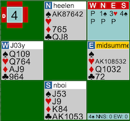

Though the Covid-19 shelter-in place-rule has made it impossible to hold our weekly Cardology Kids game on Saturdays, we run a virtual game twice a week, on Saturday at 4:00 and on Tuesday at 7:00. Until we get permission to create a pairs game, we are confined to team play, which is more than adequate on BBO.
The following hand has a few hidden lessons, so it has been chosen for our first entry.

Heelen (we will us players BBO names to protect the guilty) opened this 10 hcp hand 1S. This hand has certainly got the full values for an opener with that great 7-card spade suit.
Midsummer went a little pessimistic, choosing to use a preemptive overcall of 3♥ rather than the stronger overcall of 2♥.
Nboi had to make a decision between 3♠ and 4♠. (Pass is too weak and a 4♥ cue would be too strong.)
J03y has good heart support and an outside ace, but opposite a weak hand and vulnerable, he chose discretion over valor and passed.
The opening lead was the ace of hearts and when declarer cashed the ace of trump, it was clear that there would have to be a losing trump. Heelen threw-in west with the last trump and J03y was end-played.
The contract could have been set with the lead of the diamond queen, but whoever could find this lead would lose ¾ of the time on typical hands. East-West could make 5♥ losing only two clubs, but who would find that contract?